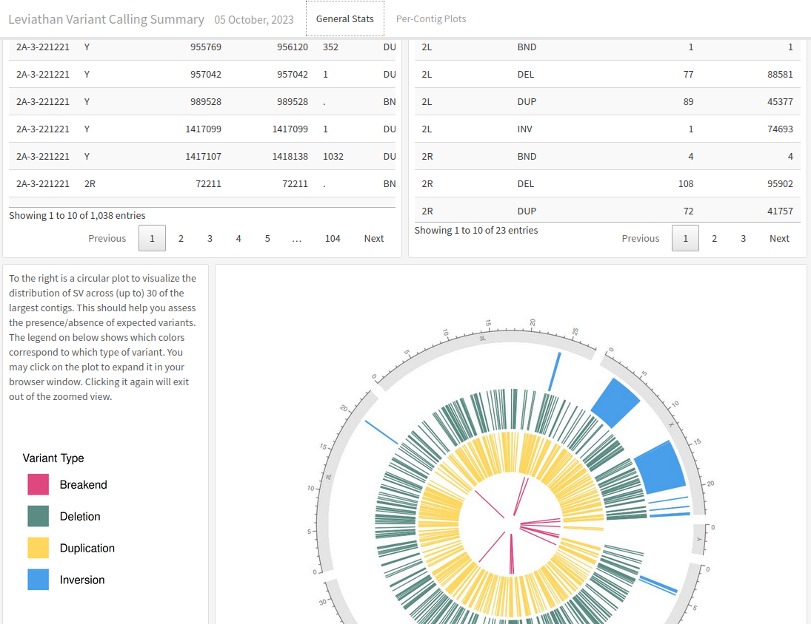

Call Structural Variants using LEVIATHAN
- at least 4 cores/threads available
- sequence alignments:
.bam
❗
coordinate-sorted
- the
BXtag must be the last tag in the alignment record - the barcode must be haplotagging ACBD or 10x/TELLseq nucleotide format (stLFR isn't recognized)
- the
- genome assembly in FASTA format: .fasta .fa .fasta.gz .fa.gz case insensitive
-
optional
sample grouping file (
see below )
This file is optional and only useful if you want variant calling to happen on a per-population level.
- takes the format of sample
tab
group
- spaces can be used as delimeters too
- the groups can be numbers or text (i.e. meaningful population names)
- you can comment out lines with
#for Harpy to ignore them - create with harpy template groupings or manually
- if created with
harpy template groupings
, all the samples will be assigned to group
pop1- make sure to edit the second column to reflect your data correctly.
sample1 pop1
sample2 pop1
sample3 pop2
sample4 pop1
sample5 pop3
#sample 6 pop4known quirk
There's an unusual error on the Snakemake side of things that happens when the name of a sample and population are identical.
It has been unclear how to resolve this issue, so to protect yourself, it's best to make sure the population names are different
from the sample names. A simple fix would be to use underscores (_) to differentiate the population name.
After reads have been aligned, e.g. with
align bwa
, you can use those alignment files
(.bam) to call structural variants in your data using LEVIATHAN. To make sure your data
will work seemlessly with LEVIATHAN, the alignments in the input BAM files should end
with a BX:Z tag. Use
validate bam
if you want to double-check file
format validity.
harpy sv leviathan OPTIONS... REFERENCE INPUTS...harpy sv leviathan --threads 20 -s 90,95,95 genome.fasta Align/bwaRunning Options
In addition to the common runtime options , the sv leviathan module is configured using these command-line arguments:
Duplicates
If it feels like Leviathan is unneccesarily splitting larger variants into smaller overlapping or adjacent ones, this parameter should help limit that from occuring.
Barcode sharing thresholds
The default Leviathan setting of 99 for these three parameters can be too strict and omit
variants you are expecting to find (e.g. certain large inversions). If you suspect the program
is missing variants, then you may trying relaxing these thresholds (e.g. 99 95 95).
Single-sample variant calling
When not using a population grouping file via --populations, variants will be called per-sample.
Due to the nature of structural variant VCF files, there isn't an entirely fool-proof way
of combining the variants of all the samples into a single VCF file, therefore the output will be a VCF for every sample.
Pooled-sample variant calling
With the inclusion of a population grouping file via --populations, Harpy will merge the bam files of all samples within a
population and call variants on these alignment pools. Preliminary work shows that this way identifies more variants and with fewer false
positives. However, individual-level information gets lost using this approach, so you will only be able to assess
group-level variants, if that's what your primary interest is.
lifehack
If you have a small number of samples (~10 or fewer) that you are interested in comparing the results of structural variant calling for,
you can provide a sample grouping file via --populations where each sample is its own population and Harpy will output a report
comparing "populations" as usual. Keep in mind that if there are too many samples, the formatting of the reports might not render
it too well.
LEVIATHAN workflow
Leviathan is an alternative variant caller that uses linked read barcode information to call structural variants (indels, inversions, etc.) exclusively, meaning it does not call SNPs. Harpy first uses LRez to index the barcodes in the alignments, then it calls variants using Leviathan.
graph LR
subgraph id1 [Population calling]
bams2[BAM alignments]:::clean --> popsplit([merge by population]):::clean
end
subgraph id2 [Individual calling]
bams[BAM alignments]:::clean
end
id1 & id2-->A
A([index barcodes]):::clean --> B([leviathan]):::clean
B-->C([convert to BCF]):::clean
style id1 fill:#f0f0f0,stroke:#e8e8e8,stroke-width:2px,rx:10px,ry:10px
style id2 fill:#f0f0f0,stroke:#e8e8e8,stroke-width:2px,rx:10px,ry:10px
classDef clean fill:#f5f6f9,stroke:#b7c9ef,stroke-width:2pxThe default output directory is SV/leviathan with the folder structure below. sample1 and sample2 are generic sample names for demonstration purposes.
The resulting folder also includes a workflow directory (not shown) with workflow-relevant runtime files and information.
SV/leviathan
├── breakends.bedpe
├── deletions.bedpe
├── duplications.bedpe
├── inversions.bedpe
├── logs
│ ├── sample1.leviathan.log
│ ├── sample1.candidates
│ ├── sample2.leviathan.log
│ └── sample2.candidates
├── reports
│ ├── sample1.SV.html
│ ├── sample2.SV.html
│ └── data
│ ├── sample1.sv.stats
│ └── sample2.sv.stats
└── vcf
├── sample1.bvf
└── sample2.bcfBelow is a list of all leviathan command line options, excluding those Harpy already uses or those made redundant by Harpy's implementation of LEVIATHAN.
These are taken directly from the LEVIATHAN documentation.
-r, --regionSize: Size of the regions on the reference genome to consider (default: 1000)
-n, --maxLinks: Remove from candidates list all candidates which have a region involved in that much candidates (default: 1000)
-M, --mediumSize: Minimum size of medium variants (default: 2000)
-L, --largeSize: Minimum size of large variants (default: 10000)
-s, --skipTranslocations: Skip SVs that are translocations (default: false)
-p, --poolSize: Size of the thread pool (default: 100000)These are the summary reports Harpy generates for this workflow. You may right-click the image and open it in a new tab if you wish to see the example in better detail.
Summarizes the count and type of structural variants and visualizes their locations on
the chromosomes. Calling variants on population-pooled samples will instead report on populations.
